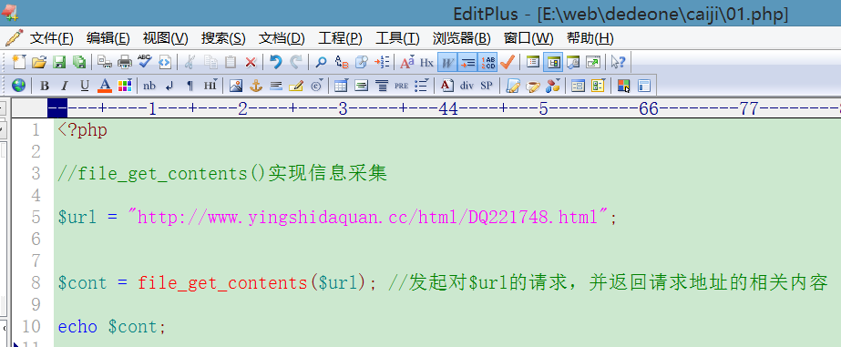

信息采集实现原理
一个网站去采集另外一个网站的信息，可以通过如下几种方式实现：
① file_get_contents();
② fsockopen()
③ curl方式
等等(也还有其他方式)
采集本质原理：php语言可以允许跨域请求其他网站网址，并获得网址对应的源代码内容。
PHP里做一般的获取内容时，用自带的file_get_contents()函数基本就足够了。 如果是遇到需要登录的页面， 还是需要curl。
注意：要在PHP.ini中对curl的extension前面的分号去掉，file_get_contents()还要把openssl的扩展同样打开
5.1 file_get_contents()

file_get_contents()函数实现的作用：
① 打开本地服务器的文件
② 可以向其他网络地址发起请求
采集的效果：

5.2 fsockopen()
通过fsockopen()发起请求：

请求效果：

5.3 curl方式
curl是php的一个扩展，类似gd库一样
在php.ini打开其扩展

之后重启apache

上图，在php.ini中已经开启了php_curl.dll扩展，并且还有上图错误
解决：
在php的目录复制两个文件粘贴到系统目录


上边php目录的两个文件复制粘贴到系统目录：C:\Windows\System

之后。重启apache
再次查看phpinfo,就发现curl是ok的：

通过curl实现信息采集：

访问效果：

<?php
function file_get_contents_by_curl($url){//将curl封装为函数
$ch = curl_init();//初始化 cURL 会话
curl_setopt($ch, CURLOPT_URL,$url); //请求的URL
curl_setopt($ch, CURLOPT_HEADER,0); //启用时会将头文件的信息作为数据流输出
curl_setopt($ch, CURLOPT_RETURNTRANSFER,1);//禁止调用时就输出获取到的数据
curl_setopt($ch, CURLOPT_FOLLOWLOCATION,1);//TRUE 时将会根据服务器返回 HTTP 头中的 "Location: " 重定向
curl_setopt($ch, CURLOPT_SSL_VERIFYPEER,false);//禁用SSL校验
curl_setopt($ch, CURLOPT_SSL_VERIFYHOST,false);
$result = curl_exec($ch);
curl_close($ch);
return $result;
}
这两行才是关键。
curl_setopt($ch, CURLOPT_SSL_VERIFYPEER, false);
curl_setopt($ch, CURLOPT_SSL_VERIFYHOST, false);
算是一小段救命代码，以前知道的看完一笑就好了，主要为不知道的朋友们准备。
6. 图片采集实现
信息采集效果，采集电影列表页面的许多“图片”内容，存储到本地：
通过file_get_contents()实现

采集图片本质原理，获得上图的img标签的src属性值，并对该属性值发起请求，这样就会获得img图片的二进制码内容，然后给该二进制码存储到一个文件中，该文件就是物理图片。
模式修正符U 避免贪婪匹配：

preg_match_all()全局匹配：

匹配到的结果示意：

strrchr(字符串，@)使用
strrchr的结果：@163.com

实现外部电影网站的图片采集功能：


采集到的物理图片效果：
header('Content-type:text/html;charset=gb2312');
$url="http://www.6vhao.net";
$all=file_get_contents_by_curl($url);//1获取网页所有静态页面
// var_dump($all);die;
//2正则匹配出img标签，非贪婪匹配，第一次匹配到就好
$reg="/<img.+src=\"(.*)\"/U";
preg_match_all($reg, $all, $outs);//3根据匹配规则得到所有图片信息到数组$outs
var_dump($outs);
$dir="./pic";
foreach ($outs[1] as $key => $v) {//[0]是完整标签，[1]是url数组
// var_dump($v);
$name=strrchr($v,'/'); //4截取url中包含的文件名
$imgc=file_get_contents_by_curl($v);//5获取图片流内容
file_put_contents($dir.$name, $imgc);//6保存图片到组装好的文件名中
}
//封装curl为函数
function file_get_contents_by_curl($url){//将curl封装为函数
$ch = curl_init();//初始化 cURL 会话
curl_setopt($ch, CURLOPT_URL,$url); //请求的URL
curl_setopt($ch, CURLOPT_HEADER,0); //启用时会将头文件的信息作为数据流输出
curl_setopt($ch, CURLOPT_RETURNTRANSFER,1);//禁止调用时就输出获取到的数据
curl_setopt($ch, CURLOPT_FOLLOWLOCATION,1);//TRUE 时将会根据服务器返回 HTTP 头中的 "Location: " 重定向
curl_setopt($ch, CURLOPT_SSL_VERIFYPEER,false);//禁用SSL校验
curl_setopt($ch, CURLOPT_SSL_VERIFYHOST,false);
$result = curl_exec($ch);
curl_close($ch);
return $result;
}